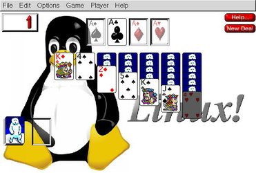
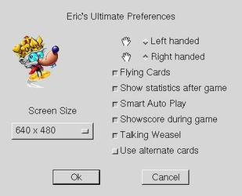

Erics Ultimate Solitaire
Archivierte Anleitung
Dieser Artikel wurde archiviert, da er - oder Teile daraus - nur noch unter einer älteren Ubuntu-Version nutzbar ist. Diese Anleitung wird vom Wiki-Team weder auf Richtigkeit überprüft noch anderweitig gepflegt. Zusätzlich wurde der Artikel für weitere Änderungen gesperrt.
Zum Verständnis dieses Artikels sind folgende Seiten hilfreich:
Eric's Ultimate Solitaire  ist eine Sammlung von Patiencen. 23 verschiedene Herausforderungen stehen in diesem Kartenspiel zur Auswahl. Spaß - für Experten und Anfänger.
ist eine Sammlung von Patiencen. 23 verschiedene Herausforderungen stehen in diesem Kartenspiel zur Auswahl. Spaß - für Experten und Anfänger.
|  |  |
| EUS | Einstellungen |
Installation¶
Nach dem einlegen der CD-ROM, verwendet man die Installationsroutine von liflg.org . Diese Routine installiert das Spiel und bringt es auf den aktuellen Stand. Um es installeren zu können muss sie ggf. ausführbar [1] gemacht werden.
Die Installation über das Terminal [2] starten:
./eus_1.0a-english_x86.mojo.run
Nach erfolgreicher Installation ist das Spiel unter "Anwendungen -> Spiele -> Eric's Ultimate Solitaire" zu finden.
Hinweis:
In einer älteren Vesion dieses Artikels ist eine alternative Installationsart beschrieben.
Bedienung¶
Spiel¶
Über "Game" die gewünschte Variante wählen. Für jedes Spiel gibt es eine Kurzbeschreibung. Man findet diese in der rechten Fensterhälfte unter "Help".
Konfiguration¶
Über "Options -> Preferences" gelangt man zu den Einstellungen. Hier kann die Fenstergröße des Spiels, z.B. auf 640x480, gesetzt werden. Außerdem könen Einstellungen zum Spielverhalten geändert werden. Die Soundeinstellungen erreicht man über "Options -> Music Preferences ...". Neben der Lautstärke kann die Auswahl der Stücke variiert und ein externer Midi-Player verwendet werden.
Midi¶
Es können eigene Midi-Dateien wiedergegeben werden. Für eine systemweite Verfügbarkeit müssen diese mit Root-Rechten nach /usr/local/games/EUS/Music kopiert werden. Alternativ kann jeder Benutzer diese unter ~/.loki/EUS/Music ablegen.
Problemlösung¶
Spielstart¶
Das Spiel startet nicht mehr. Hier reicht es die Datei Ultimate CD Prefs.dat im Ordner ~/.loki/EUS zu löschen.

Infobox¶
| Eric's ultimate Solitaire | |
| Genre: | Denkspiel |
| Sprache: | |
| Veröffentlichung: | 2000 |
| Publisher: | Loki Software Inc. |
| Systemvoraussetzungen: | Pentium 66MHz, 16+ MB RAM, 20 MB HDD |
| Medien: | CD (1) |
| Strichcode / EAN / GTIN: | 689524176028 |
| Läuft mit: | nativ |
- Erstellt mit Inyoka
-
 2004 – 2017 ubuntuusers.de • Einige Rechte vorbehalten
2004 – 2017 ubuntuusers.de • Einige Rechte vorbehalten
Lizenz • Kontakt • Datenschutz • Impressum • Serverstatus -
Serverhousing gespendet von